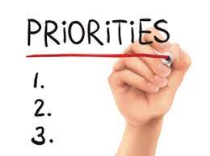

Kā izplānot savu laiku
Ieteikumi laika plānošanai
Mūsu ikdienas režīms līdzinās vāveres ritenim: darbs, bērnu mācības un pulciņi, vēl jāpagūst uz sporta klubu un jaunās teātra sezonas izrādēm... Kur visam ņemt laiku?
Laika menedžmenta eksperts Džeimss Manktelovs no mindtools.com ir pārliecināts – viss būs kārtībā, ja katrai dienai būs skaidrs laika plāns.
- Sāciet ar nākamās dienas veicamo darbu sarakstu. Vispirms pierakstiet uz lapas visus aktuālos darbus, tad sadaliet lapu trīs slejās (A, B, C) un sagrupējiet darbus pēc prioritātes:
- augsta prioritāte (A) – jūsu profesionālās prioritātes, darbi, kam beidzas termiņš, kā arī personīgi jums un tuvajiem cilvēkiem neatliekamas lietas,
- vidēja prioritāte (B) – darbi, ko būtu labi paveikt šodien, bet ko var atlikt arī uz rītu,
- zema prioritāte (C) – lietas, kas izdarāmas vēlāk vai deleģējamas citiem.

- Apsveriet, cik laika katrs darbs varētu prasīt. Sasummējiet to un novērtējiet, vai viss iecerētais maz ir ietilpināms vienā dienā. Pētījumi liecina, ka mēs varam saplānot tikai 60% laika– pārējais tiek patērēts iepriekš neparedzamām lietām. Tāpēc, ja plānotais pārsniedz 60% pieejamā laika, mazāk svarīgo uzreiz izsvītrojiet.
- Ik vakaru pārbaudiet, vai visu izdevies paveikt. Ja ne – izanalizējiet, kas un kāpēc jūsu ikdienā patērē pārlieku daudz laika, bet kam tā allaž nepietiek. Ievērojiet šo principu vismaz četras nedēļas, un drīz pamanīsiet, ka jūsu dzīvē ir mazāk stresa, toties parādījies vairāk laika.
Ne viss jādara pašam
Nošķiriet darbus, kas neaizstājami jāpaveic jums pašam un kurus varat deleģēt citiem vai mūsdienu tehnoloģijām. Piemēram, neviens jūsu vietā nedosies pie ārsta, neapraudzīs vecākus un nerakstīs vēstules. Taču atbildes ziņojumu „Paldies, vēstule saņemta!” jūsu vietā var nosūtīt arī serveris. Tāpat, kopš izgudrota internetbanka, ir lieki šķiest laiku maksājumu kārtošanai personiski – tam radīti automātiskie un regulārie maksājumi.
LAttīstiet komunikācijas prasmes
Daudz mūsu dārgo minūšu un stundu lieki patērē aplama komunikācija: ieilgušas sanāksmes, pārlieku garas sarunas klātienē un pa tālruni, neskaidri nodota un uztverta informācija. Tāpēc:
- allaž koncentrējieties uz galveno, runājiet kodolīgi un konstruktīvi, sniedziet skaidrus un nepārprotamus vēstījumus;
- paredziet noteiktu laiku, kad esat pieejams citiem;
- mācieties pateikt „nē” – māksla atteikt slēpjas prasmē noraidīt nevis personu, bet tikai tās izteikto priekšlikumu.
Īstie darbi īstajā laikā
Pārskatiet savus dienas paradumus – piemēram, ja ceļā uz darbu regulāri kavējaties sastrēgumos, izbrauciet pusstundu ātrāk. Apsveriet, vai esat pūce vai cīrulis, un centieties svarīgākos darbus un tikšanās ieplānot produktīvākajās stundās.
Maldās tie, kuri domā, ka ietaupa laiku, darot vairākus darbus vienlaikus – teiksim, runājot pa tālruni, rakstot e-vēstules un šķirojot dokumentus. Statistika liecina, ka šādi mēs patiesībā patērējam 20–40% vairāk laika, nekā darot tos atsevišķi.Turklāt cieš kvalitāte un mēs ātrāk nogurstam.

Likvidējiet laika zagļus
Lūk, virkne izplatītāko ikdienas nodarbju, kas minūti pa minūtei veido tukši izšķiestas stundas: pārāk bieža e-pasta pārbaude, ilgas telefonsarunas, ziņu portālu pārlūkošana, sērfošana internetā, haoss uz darba galda. Kā novērst šīs sīkās zādzības?
- Ziņu portālu un sociālo mediju pārlūkošanai atvēliet noteiktu laiku un nepārsniedziet to. Ja gaidāt svarīgu vēstuli, izvēlieties opciju, lai pastkastīte jums paziņo par tās pienākšanu.
- Ieviesiet ērtu kārtību savā darba vietā: bieži lietojamās lietas – pa rokai, retāk vajadzīgās – tālāk, dokumentus – mapēs.
- Lai ietaupītu laiku, lietojiet kvalitatīvus darbarīkus (ātru datoru, labas rakstāmlietas, šķēres utt.).